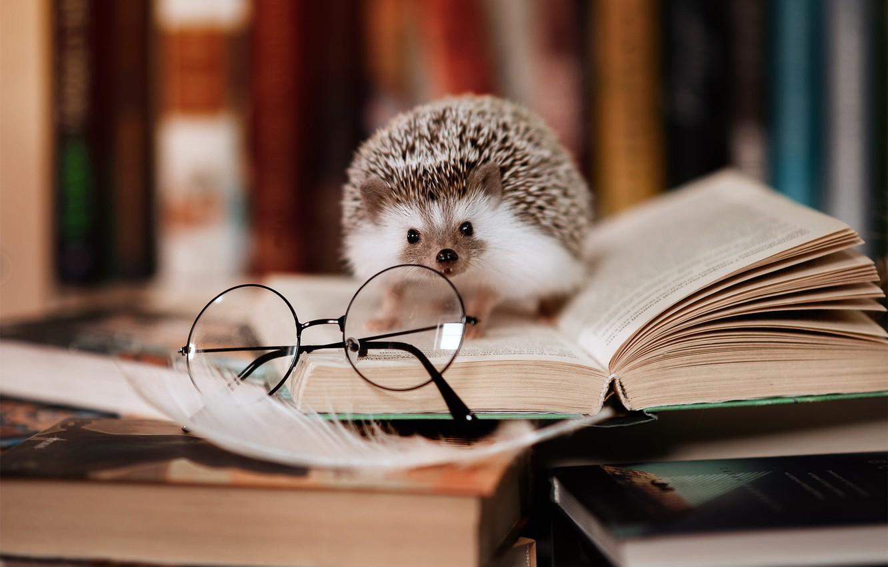

То чувство, когда узнал, что где-то в лесу бродит маленькая девочка с ручным медведем

Если переживал, что не увидишь кота учёного (ну, а почему бы вдруг и нет?)
то не зря переживал, но вот тебе вместо него ёж учёный
Если ты задался вопросом, почему ёжики никогда не пьют газировку, то ответ найдёшь здесь
Или можешь узнать чуть ниже 🎼